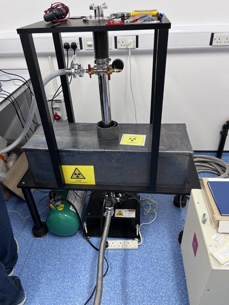

Mössbauer spectroscopy
⁵⁷Fe Mössbauer spectrometer (Wissel) with cryostat (Janis)
Mössbauer spectroscopy is specific to iron and probes its local chemical environment directly. We use it to determine Fe(II) and Fe(III) proportions, identify iron mineral phases and quantify their relative abundances. Low-temperature measurements help to resolve magnetically ordered phases, including nanoparticulate and poorly crystalline iron (oxyhydr)oxides, which are often difficult to distinguish at room temperature.
Spectra can be fitted and interpreted with MinSight, our online platform for Mössbauer data analysis.
- Temperature
- 4.2 to 295 K
- Geometry
- Transmission
- Sample
- 50 to 100 mg of powder
- Iron content
- At least 5 to 10 wt% Fe